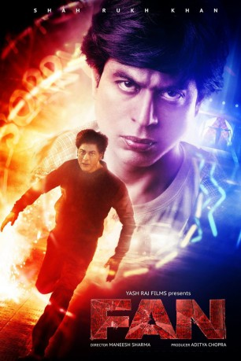
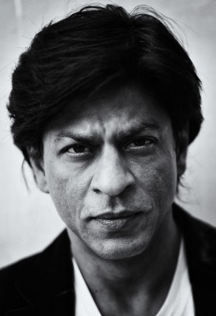
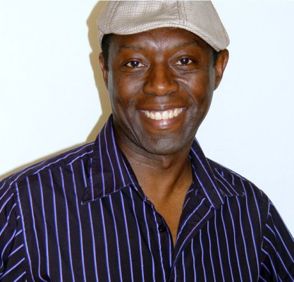
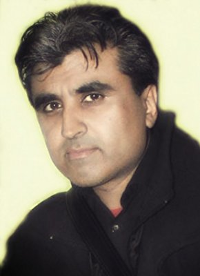

#4826 Fan
 
 IMDB-Wertung: 7.4 / 10
IMDB-Wertung: 7.4 / 10  Metascore: 0
Metascore: 0 
Gaurav (Shah Rukh Khan), ein junger Mann aus Indien in seinen 20ern, hat einen persönlichen Gott: Aryan Khanna (ebenfalls Shah Rukh Khan). Der ist Filmstar und Gaurav ist sein größter Fan. Vom Norden Indiens, von Delhi, macht sich Gaurav auf den Weg Richtung Westen, nach Mumbai, um Aryan zum Geburtstag zu gratulieren. Weil er seinem Idol sehr ähnlich sieht, glaubt Gaurav, dass er gute Chancen auf ein Treffen hat. Und überhaupt: Wie schwierig kann es für den größten Fan der Welt sein, eine Audienz zu bekommen? Doch als die Dinge für Gaurav nicht nach Plan laufen, verwandelt sich seine leidenschaftliche Zuneigung in eine gefährliche Obsession. Die beiden Männer, Fan und Gott, enthüllen ihre bisher verborgenen Seiten: Superstars sind auch Menschen, und Fans können ihnen sehr gefährlich werden…
Jahr: 2016
Dauer: 138 Minuten
FSK: 12
Land: Indien Studio: Alive Vertrieb und MarketingTonspuren: DTS - ,
Untertitel: Deutsch,
Auflösung: 1080p (1920x800) Größe: 6000 MB
Genre: Action, Drama, Thriller
Regisseur: Maneesh Sharma
Drehbuch: Blanche Hanalis
Soundtrack:
Darsteller:
-  Shah Rukh Khan als Gaurav Chandna / Aryan Khanna
- Sayani Gupta als Aryan Khanna's Legal Advisor
- Shriya Pilgaonkar als Neha
 Lee Nicholas Harris als Arresting Police Officer Sgt492
Lee Nicholas Harris als Arresting Police Officer Sgt492- Mariola Jaworska als Security / Tourist at Madame Tussauds
 Gino Picciano als Train Station Passenger
Gino Picciano als Train Station Passenger- Noni Harrison als News Reporter
- Halima Nagori als Journalist
- Gioacchino Jim Cuffaro als Passerby
- Farah Ahmed als Red Carpet Guest / Screaming Tourist
 Atul Sharma als Tourist
Atul Sharma als Tourist- Jack Gover als Wedding Crew
- Zachary Coffin als Jail Inmate
- Glenn Webster als Security
-  Mo Idriss als Press Room Journalist
- James Richard Marshall als James
- Jason Grangier als Security Guard
- Indraneel Bhattacharya als Akhtar
 Euan Macnaughton als Arresting Police Officer Sgt646
Euan Macnaughton als Arresting Police Officer Sgt646- Nisaro Karim als Journalist
- Randeep Chana als Red Carpet Guest / Paparazzi Photographer
- Gerald Tomkinson als Train Station Passenger
- Usman Akram als Reporter
- Francesco Tribuzio als Passerby
- Chandru Bhojwani als Raj
- Connor Williams als Tim
- Chris Martin Hill als Arresting police Officer PC191
- Paul Blackwell als Police Officer
- Miroslav Zaruba als Head of Security
- Puja Panchkoty als Journalist
- Robert-Anthony Artlett als Train Station Passenger
- Laura Bernardeschi als Crowd
- Kornelia Horvath als Press Photographer
 Raj Awasti als Red Carpet Guest
Raj Awasti als Red Carpet Guest- Richard Banks als Police Officer
- Alex Jaep als Crew Member
- Tatiana Zarubova als Rich Guest
-  Manoj Anand als Red Carpet Guest / Paparazzi Photographer
- Kishore Bhatt als Red Carpet Guest / Paparazzi Photographer
- June Smith als Emmanuel Charsian, Exhibit Guide
- Waluscha De Sousa als Aryan Khanna's Wife
- Pamela Betsy Cooper als Red Carpet Guest
- Pete Meads als Police Officer
- Yogendra Tikku als Gaurav's Father
- Ricky Rajpal als Journalist
- Deepika Amin als Gaurav's mother
- Taher Shabbir als Sid Kapoor
- Sandeep Mohan als Red Carpet Guest / Reporter
- Celina Nessa als Red Carpet Guest / Reporter
- Helen Banks als Commuter
Datei: X:\2016(A-F)\Fan (2016, FSK12, 1920x800).mkv seit 21.11.2016
Festplatte: HD 2016(A-Z)
 Es gibt insgesamt 147 Filme in der Gruppe '2016(A-F)'
Es gibt insgesamt 147 Filme in der Gruppe '2016(A-F)'